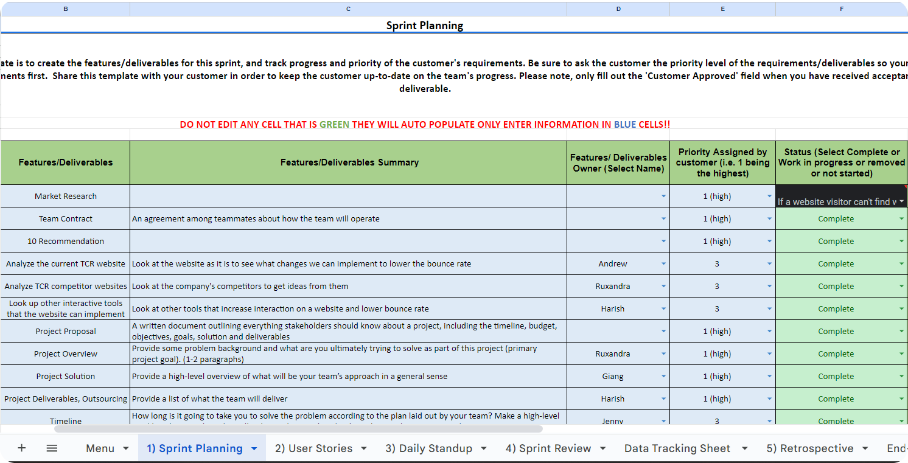

TCR Advanced Interaction Features

Despite it being a business class, my Domestic & Global Outsource Management class gave me my first opportunity to provide UX research and UI designs to a real client. My class formed teams of 5 (my role: project manager and lead designer) and for the next 10 weeks, we worked in an Agile environment, with weekly SCRUM and client meetings, a product backlog, and end of week reports. Through constant research, iteration, and feedback from the client, we were able to help provide IS project management consultation and designs to TCR Advanced - an IT consulting company in India.
To view TCR’s website, click here!
The main issue that the client is facing is a lack of user interaction with the website. There is not enough engagement with the website from the users from a communication perspective. Because the content of the page is very text and information heavy, users may have many questions on the services provided and must be able to sort through the data to easily contact the team, but that does not seem to be the case currently.
Working in an Agile environment helped my team consistently work on our deliverables and refinine them each week with client check-ins.
It is important to note that the goal of this class was to plan and execute hands-on outsourced tasks, learn how to track and measure progress/risk, develop trust, ability to scope and structure a complex business problem, communicate progress and challenges with our customer team, and refine our project management skills both in the domestic and global environment. To sum it up – we had to learn to communicate in our team and with our client to ensure that we provide them with the research to back our ideas, as well as listening to their wants and implementing them appropriately. For the sake of this case study, I will focus more on my own deliverables.
With this research, we were able to brainstorm and pitch 10 feature suggestions, 9 of which were approved by the client.
The fast paced nature of this course paired with teamwork within an Agile workspace taught me how to balance the client’s wants, the user’s needs, and industry standards. This may be hard, but as a UX researcher and designer, it is my job to present the data to the client while also hearing their concerns and addressing them. If I could redo this experience, I would love to meet with TCR’s clients and conduct interviews and conduct usability testing to ensure I am designing for them as well, however, this was not possible at the time of this project.